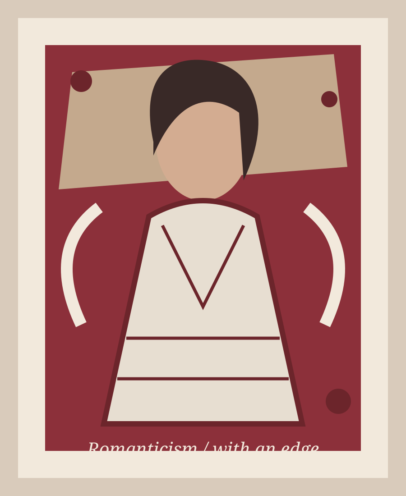
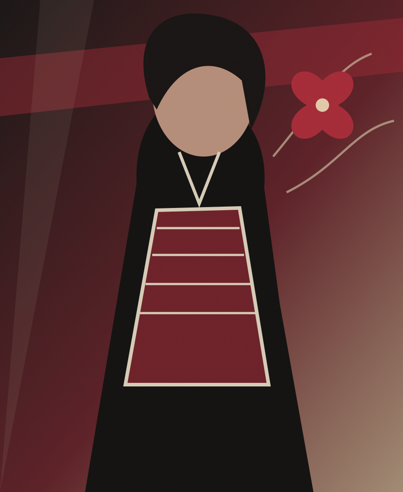

VÉNUS / YOUR STYLE DNAFIG. 01
✦
Tu fórmula
está por descubrir.
Completa el test para traer tu lectura a este espacio.
El test te dio una brújula. Aquí conviertes esa lectura en outfits, referencias, prendas reales y experimentos propios.


Completa el test para traer tu lectura a este espacio.
El diagnóstico no es una sentencia. Tu estilo se afina cuando lo llevas, lo vives, lo contradices y vuelves a elegir.
Registra piezas que sí usas. Añade categoría, color, ocasión y una foto opcional. La información se guarda localmente.
Registra primero 5–10 prendas que realmente usas. Después añade las que nunca sabes cómo combinar. Un armario digital útil no necesita un inventario perfecto.
Selecciona una ocasión y VÉNUS combina piezas guardadas por categorías. Es una sugerencia aleatoria, no una evaluación del outfit.
Las combinaciones se construyen con tus prendas. Si falta una categoría, el generador lo dice en vez de inventar ropa.
Guarda imágenes propias, URLs de inspiración o una nota. Añade tags para buscar referencias por estética, color o sensación.
Usa tags como “proporción”, “color”, “textura”, “accesorios” o “sensación”. Tu moodboard se convierte en una biblioteca de decisiones.
Registra un outfit o una prueba. La evaluación es tuya: comodidad, identidad y ganas de volver a usarlo.
No se trata de una transformación obligatoria. Guarda hallazgos, contradicciones y looks que te hicieron sentir presente.
Antes de comprar, compara la idea con lo que ya tienes. Esta comprobación es orientativa y funciona con las categorías y colores que registraste.
Una pieza debe cubrir una necesidad real, combinar con prendas que ya usas y caber en tu presupuesto. Si solo funciona en una foto, quizá no es una compra.